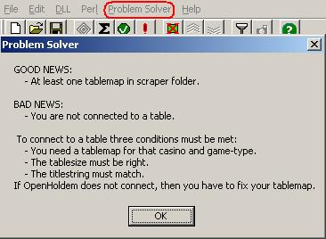
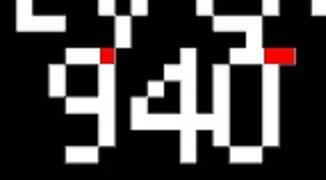
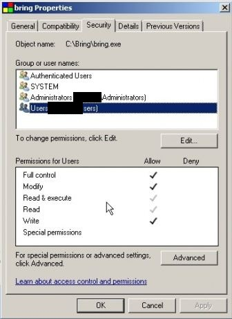
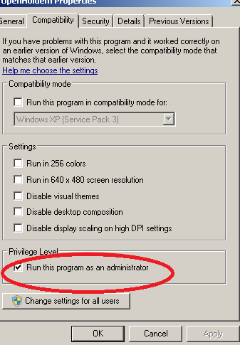
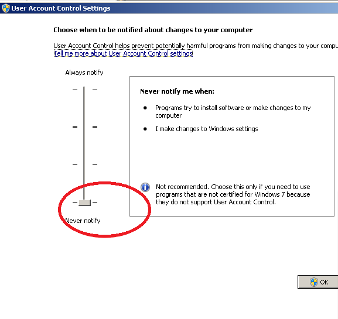

Favourite Failures
This chapter will teach you about the most common beginners mistakes. They all have been reported at least several times; solving these “problems” over and over again has cost hundreds of newbies (and especially the forum-regulars!) quite some time and nerves. But the good news is: these issues are easy to avoid once you are aware of them. And the even better news: writing this manual took some time (due to all these newbies ;-); in the mean-time we managed to prevent these beginner mistakes and to auto-detect most of the rest. There even is a new feature called “Problem Solver” that will assist you a little bit up to the point where OpenHoldem is able to act.

But it won’t hurt if you read on and learn to know these potential pitfalls.
OpenHoldem does not connect to the table
Reason: Table not recognized because of incorrect system-settings.
To recognize a table the following criteria have to match:
- size of the window
- table-title
- optional tablepoints r$tablepointX if you have two very similar maps for the same casino, e.g. 6-max and 9-max.
Usually the problem is the window-size caused by “wrong” system-settings. Tablepoints are rarely used, but you should be aware of their existence, especially if you downloaded somebody elses map from the forum.
OpenHoldem does not play (I) and the autoplayer-button can’t be enabled
Reason: No good input.
The autoplayer of all more recent versions (4.x+) will immediatelly be enabled after connection to a table, but it can only act if the scraper recognizes your cards and at least two buttons.
OpenHoldem does not play (II)
Reason: no stable input (“balance-stability” and “card-stability”)
One safety-measure to avoid incorrect plays is the option to wait for “balance-stability”. Without reasonable input you can be sure to become a victim of the GIGO-principle (garbage in — garbage out). The example below shows a FullTilt mini-table, where the regions for player-names and balances partially overlap.

There are several counter-meassures that will help you to deal with such issues:
- avoid mini-tables
- make sure, that regions don’t overlap
- turn off all kind of animations
- always use replay-frames for building tablemaps and for investigation if you experience problems at a real casino.
OpenHoldem calls any hand
Reason: Tablemap does not detect bet amounts.
If OpenHoldem calls every hand — except maybe the strong ones — this is probably neither a bug in OpenHoldem nor bad logic in the bot, but a problem with the Tablemap or with your settings again: The TM does most probably not recognize your opponents bet, so OpenHoldem thinks you have a free play and calls.
Whenever you experience strange actions, you should ask yourself the following questions (http://forum.winholdem.net/wbb/viewtopic.php?f=38&t=12408):
- is the scraper reading the bet values correctly?
- is the scraper reading my cardfaces correctly?
- is the scraper reading opponent cardbacks correctly?
- do the blind values look sane?
- does the site provide handnumbers?
- are my action buttons being seen when my turn arrives?
You can check the values for these symbols in the debug-tab of the formula-editor.
= betround = sblind = bblind = handnumber = nplayersdealt = myturnbits

If you want to investigate in detail how OpenHoldem did choose a decision, you should lookup the full autoplayer-trace in the log-file.
OpenHoldem pushes any hand
Reason: can’t connect to license server. ;-)
Just kidding — we don’t have any license server. But in other forums we have seen dialogues like below:
Customer: OpenHoldem pushes every hand.
(some days later): Any response?
Admin: Our license server is down.
Customer: This can be the reason for allin?
Admin: Yes. One reason.
Customer: I bought early August. Now it is September.
Admin: Sorry. My partner is on holiday.
OpenHoldem does not work in ManualMode
Reason: Not your turn or userchair not recognized.
To work properly OpenHoldem must have recognized the userchair. Also some symbols are only valid when it is your turn to act. So you should highlight some buttons in ManualMode; just click them; usually they are grey, which means not existent.
OpenHoldem executes the wrong action
********* Basic Info *********************************************************** 2016-12-25 10:48:24 - Version: 9.4.3.0 ... 2016-12-25 10:48:24 - f$betsize: 65.00 2016-12-25 10:48:24 - Formulas: FCKR. 2016-12-25 10:48:24 - Buttons: FC..A 2016-12-25 10:48:24 - Best action: f$betsize 2016-12-25 10:48:24 - Action taken: f$call
Sometimes new users complain that OpenHoldem executes the wrong action. The most common reason — after bad bot-logic — are “missing” buttons that did not get recognized by the tablemap. In the example above no raise-button could not be found that at many casinos gets used to confirm the betsize. As a consequence OpenHoldem chose a so-called backup-action.
OpenHoldem acts multiple times
Reason: Improper bring-delay and scraper-delay.
The bring-delay should be somewhat smaller than the scraper-delay. Otherwise it can happen that OpenHoldem acts but bring doesn’t display a new image in time. So when the next heart-beat-cycle starts, OpenHoldem will scrape the exact same game-state another time and act another time.
This problem has been improved by marking frames as unstable when OpenHoldem acts, so OpenHoldem has to wait for a certain number of stable frames again. However the problem may still appear, if your scraper- and bring-delay do mismatch or if you don’t wait for stable frames.
OpenHoldem permanently clicks sitout / sitin
Reason: Tablemap does not correctly scrape sitin/sitout.
The tablemap probably does not correctly determine the state of the sitin- or sitout-region; as a consequence the bot will think its action had no effect and will try over and over again. There is a funny legend back from the ancient times of WinHoldem or OPI: the tablemap (a built-in feature of the software at that time) once again failed because of a casino-update. As a consequence lots of “players” were suddenly sitting in and sitting out once per second. It must have been a devilish joy for their opponents; innummerable bots got reported and finally busted.
So always remember: Bots are very stupid and very volatile beings.
This can no longer happen as we execute the hopper functions only once every 4 seconds.
OpenScrape does recognize something, but OpenHoldem does not (I)
Reason: Different versions of the same map.
A very common “bug”-report: some beginner has just fixed his first map and complains that OpenScrape recognizes the bets, the fonts of the player names or whatever; but OpenHoldem fails to do so. The reason is quite simple: he usually has multiple versions of the map in his scraper-folder and has simply loaded the wrong map. If you have the auto-connector enabled, OpenHoldem will load the “first” map that fits.
This gets now prevented as OpenHoldem checks if multiple maps with the same sitename exist.
OpenScrape does recognize something, but OpenHoldem does not (II)
Reason: Halfmade tablemap
Scraping is the most time-consuming part of the heartbeat-cycle, so OpenHoldem does implement some reasonable optimizations. It will only scrape names, bets and balances of a certain chair, if that chair is occupied. If OpenScrape and your tablemap are able to scrape those regions but OpenHoldem does not do so, then you have most probably forgotten to define pXseated or uXseated.
This gets now prevented, as OpenHoldem checks for complete tablemnaps.
OpenHoldem works locally, but not remotely with bring
Reason: Different system configurations on your casino-machine and your bot-machine.
It is a quite common beginners mistake to setup the casino-machine in a different way than the bot-machine. The casino-client will be rendered in a different way, so OpenHoldem will no longer be able to scrape the screenshots displayed by Bring. If you don’t want to install OpenHoldem on the casino-machine to check the settings, the only way to fix that problem is a careful manual walk-through (experts could clone a VM or deploy some registry-settings).
OpenHoldem does not load my DLL (I).
Reason: Missing or incorrect libraries.
Most DLLs use external functionality and therefore depend on supporting libraries. Most often this is msvcrt (MicroSoft Visual Studio C++ RunTime Library). Also the correct version is important. OpenHoldem requires currently Visual Studio 2010 Professional, but Perl needs 2005. Checking the dependencies of your DLL with MicroSoft Dependency Walker will help. You can downlaod this tool from http://www.dependencywalker.com/.
OpenHoldem does not load my DLL (II).
Reason: Libraries not found.
Even if you have all libraries installed, it might be, that your operating system does not find your DLL or other required libraries. Windows uses the following “Dynamic-Link Library Search Order”
- The directory from which the application loaded.
- The current directory.
- The system directory. Use the GetSystemDirectory function to get the path of this directory.
- The 16-bit system directory. There is no function that obtains the path of this directory, but it is searched.
- The Windows directory. Use the GetWindowsDirectory function to get the path of this directory.
- The directories that are listed in the PATH environment variable. Note that this does not include the per-application path specified by the App Paths registry key. The App Paths key is not used when computing the DLL search path.
This is the default search order for Windows XP, SafeDllSearchMode disabled. It might be different for your operating system or configuration. For details please refer to http://msdn.microsoft.com/en-us/library/ms682586(VS.85).aspx.
OpenHoldem checked, but didfold is true
Reason: TM does not recognize buttons correctly.
If you get a freeplay, it might be that your check-button (or a check/fold-button!) is at the same location where usually the fold-button is located. If you have a simple way to detect buttons (e.g. by colour) you probably will recognize that button as fold. So OpenHoldem — not seeing a check-button — will check by clicking “fold” and didfold will be true. Similar things can happen if buttons move, e.g. a call-button at the raise-position when you can only fold or call allin.
History symbols do not work
Reason: Incorrect hand-reset.
Some symbols only require the current gamestate to be calculated (e.g. dealerchair, balance, nbetstocall). Others (like didcallround1, nbetsround3 etc.) require a complete game-history and will reset at the beginning of a new hand. If they all are zero (or -1), you have probably caused an incorrect hand-reset, e.g. by temporary occlusion. You should avoid occlusion by any means.
This problem has now practically disappeared, since OpenHoldem supports ten different handreset-methods, but only accepts a hand-reset if multiple methods fire at the same time.
When the blinds increase OpenHoldem keeps the old values
Reason: tournament not recognized.
Detecting the blind values correctly is extremely important, as it affects all kinds of other symbols. Therefore OpenHoldem provides the ability to automatically lock the blinds as soon as they are known and reasonable. For the current hand and (for cashgames) for the rest of the session (after several hands have been played). As a consequence OpenHoldem needs to know if the current table belongs to a tournament and the blinds may go up. In the past there has been a tablemap-symbol r$istournament, but way too much beginners (and veterans too!) mixed it up, so OpenHoldem detects tournaments now automatically based on several different factors;
- tournament identifiers in the title (“Sit&Go”, “MTT”, “satellite”, “qualifier”, ...)
- beautiful sum of chips at the table
- positive value of the symbol buyin (that can be read from the titlebar or scraped from the table)
- scraped MTT_symbols like players_remaining.
However in some very rare cases it might be that all methods of recognizing a tournament fail. Some casino tables don’t display helpful titles or have no titles at all. The tablemap might not provide support for optional tournament information and even the “beautiful sum of chips” might not fit if you connect in the middle of an MTT. The methods of detecting tournaments still get fine-tuned, so if you experience this problem please get in contact with us. Istournament-help-threat: http://www.maxinmontreal.com/forums/viewtopic.php?f=117&t=16104.
Pokerval does not work
Reason: Pokerval is a bitvector. You are probably confusing logical operations and bitwise operations.
In short: boolean operations work on true/false-values; bitwise operations work on long series of 0/1-values simultaneously. Lots of wisdom has been written about both topics — too much to explain it here. If you don’t really understand what I am talking about, then you really should take a pause from coding and study the chapter about OH-script. There is no way around it.
PokerTracker does not work
Reason: Invalid Sitename in the TableMap
OpenHoldem supports Poker Tracker functionality for a dozen different casinos. To query the correct stats OpenHoldem must know, at what casino you currently play. This happens by the TableMap symbols sitename and network. Please refer to the PokerTracker and TableMap section of this manual for a detailed explanantion what to do.
Quickfolding AA and other unexpected plays
Reason: Unstable frames and careless coding.
Consider code like below:
##list77## AA KK QQ AKs AQs AKo ##f$prefold## ((betround == 1) AND NOT list77)
This code basically says: “do prefold, if is is preflop and I don’t have a very great hand”. However you only get stable frames when it is your turn. So it might be that you get a mis-scrape, e.g. occlusion by a rebuy-window. Or the poker-room might update its display, temporarily showing only one of your wonderful aces. So OpenHoldem can’t recognize your great hand and folds. To avoid that problem, you need more fail-safe coding and explicitly specify the hands to fold: “do prefold, if it is preflop and I have a trash-hand.”
##list13## 72o .... ##f$prefold## ((betround == 1) AND list13)
This way mis-scrapes will not be able to defeat your fine strategy. Instead a mis-scrape will only keep f$prefold false and delay the folding of trash. The same problem might occur in all functions that might act on unstable frames (when it is not your turn), especially f$prefold, f$sitin, f$sitout, f$leave, f$rebuy and f$chat.
This failure gets now prevented too, as OpenHoldem will will execute f$prefold only if both cards are known. However: as you can see lots of things could go wrong if you are careless. Therefore it is always a good idea to keep these potential pitfalls in mind and prefer a conservative style of coding your bot.
OpenHoldem acts, but nothing happens (Windows 7)
Some people have the problem that OpenHoldem “does not act” despite the log clearly shows the opposite:
2016-03-26 00:23:05 - Best action: f$betsize = 30.00 2016-03-26 00:23:05 - Action taken: f$betsize
The reason: OpenHoldem did act, but the casino did not react. As it turned out this problem was caused by Windows user account control (UAC), that prevents the generation of virtual keyboard events. OpenHoldem (or Bring) simply missed the necessary right to generate mouse-clicks and keyboard-events. To fix this just modify the permissions like below.

If all else fails run OpenHoldem as administrator.

